SQL Server 2005
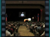
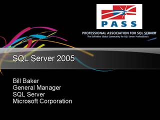
Speaker(s): Bill Baker
What's Next for Database?
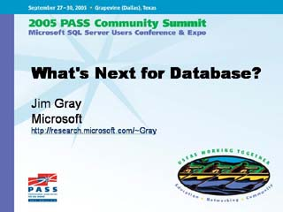
Speaker(s): Jim Gray
Data Mining with SQL Sever 2005
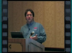
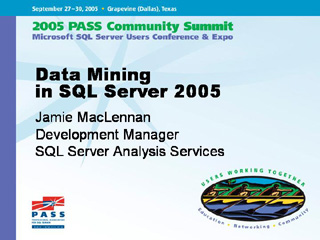
Speaker(s): Jamie MacLennan
SQL Server 2005 OS Foundation Elements
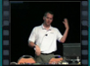
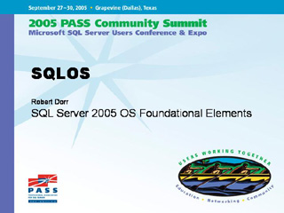
Speaker(s): Bob Dorr
Best Practices for Upgrading to SQL Server 2005
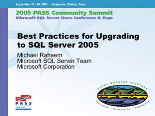
Speaker(s): Michael Raheem
Upgrading the Database Engine / New features in SQL Server 2005 - part 1
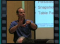
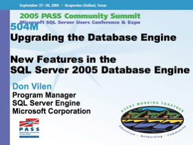
Speaker(s): Don Vilen
Upgrading the Database Engine / New features in SQL Server 2005 - part 2
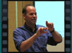
Speaker(s): Don Vilen
Upgrading to SQL Server 2005 Analysis Services
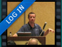
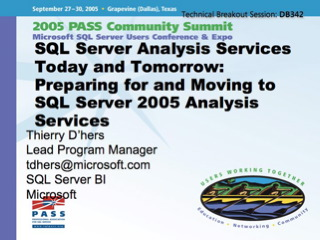
Speaker(s): Thierry D'Hers
Upgrading Data Tranformation Services
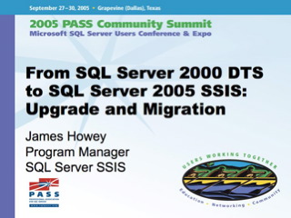
Speaker(s): James Howey
Upgrading reporting services and notification services
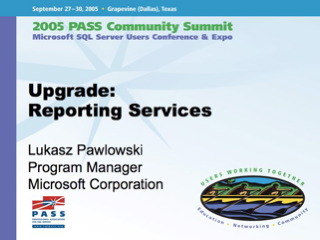
Speaker(s): Lukasz Pawlowski